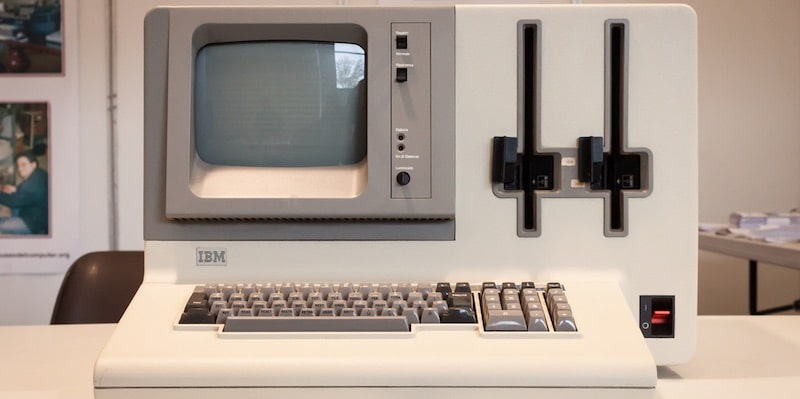

Sexta generación de computadoras (aprox. 2015–Presente/Futuro cercano)
🧠 Contexto histórico
Surge tras la quinta generación, impulsada por nuevas arquitecturas, autoaprendizaje e integración total entre dispositivos, IA e Internet de las cosas (IoT). La desaceleración de la Ley de Moore motivó el desarrollo de nuevos paradigmas como la computación cuántica y la IA generativa.
⚙️ Características principales
Nuevos hardware: procesadores cuánticos, chips neuromórficos, aceleradores de IA (GPU, TPU, NPU).
Interconexión total: IoT con billones de dispositivos, 5G/6G.
Software inteligente: IA que se adapta y toma decisiones.
Interfaces avanzadas: realidad aumentada, VR, BCI (interfaz cerebro-computadora).
🚀 Avances tecnológicos clave
Computación cuántica: Google Sycamore, IBM Quantum.
IA general (AGI) y modelos generativos como GPT.
Vehículos autónomos, robótica avanzada y cobots.
Web 3.0, blockchain, metaverso y biotecnología computacional.

✅ Ventajas sobre la quinta generación
Mayor velocidad, capacidad y autonomía.
Interacción natural con humanos (voz, visión, pensamiento).
Integración total de dispositivos.
Automatización inteligente sin supervisión constante.
⚠️ Limitaciones
Alto costo y tecnologías en desarrollo.
Riesgos éticos (desempleo, sesgos, privacidad).
Dependencia tecnológica elevada.
🧪 Ejemplos representativos
Google Sycamore, IBM Quantum System One.
Modelos GPT, Tesla Autopilot, Boston Dynamics Atlas.
Apple Vision Pro, Metaverso.
🌍 Impacto social y económico
Medicina: diagnósticos precisos.
Industria: automatización total.
Educación: aprendizaje inmersivo.
Economía: nuevas formas de trabajo y dinero.
Vida diaria: hogares inteligentes, transporte autónomo.
📌 Resumen final
La sexta generación combina IA avanzada, computación cuántica, IoT y realidad extendida, transformando la interacción humano-máquina, la automatización y la resolución de problemas globales, con fuerte impacto en todos los sectores de la sociedad.